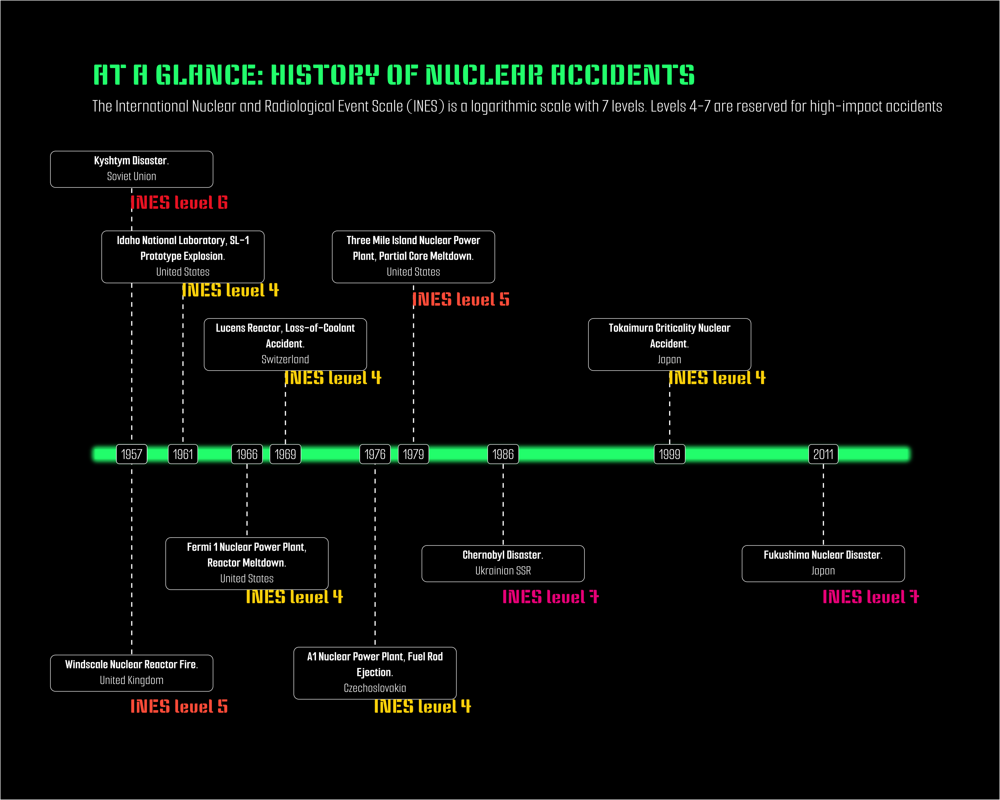
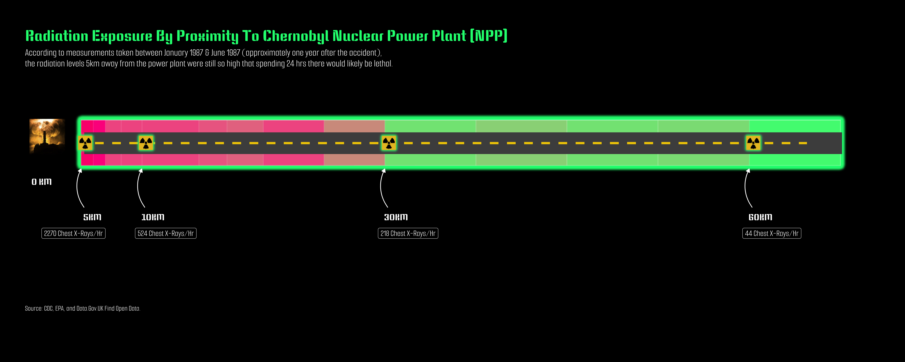
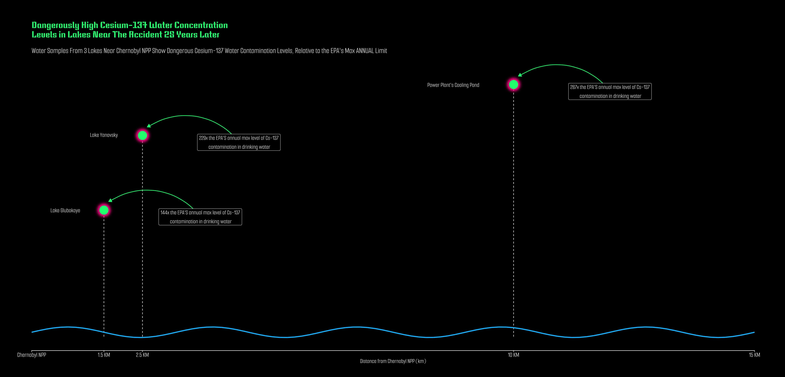

# Load libraries
library(here)
library(dplyr)
library(ggplot2)
library(janitor)
library(png)
library(jpeg)
library(patchwork)
library(scico)
library(tidyverse)
library(htmltools)
library(ggrepel)
library(grid)
library(scales)
library(stringr)
library(lubridate)
library(ggimage)
library(ggfx)
library(scales)
library(gghighlight)
library(ggtext)
library(sysfonts)
library(magick)
library(showtext)Assignment 3 (HW #3)
Nuclear Energy Infographic
Assigned Tue 02/11/2025 | Due Tue 02/25/2025
Enable showtext_auto()
# enable showtext
showtext_auto()Load fonts
font_add_google(name = "Keania One", family = "ko")
font_add_google(name = "Smooch Sans", family = "ss")Load data
chernobyl_exposure <-read.csv(here("data","chernobyl_exposure_distance.csv")) %>%
clean_names()
chernobyl_water <- read.csv(here("data","chernobyl_water_chem.csv")) %>%
clean_names()
nuclear_accidents <- read.csv(here("data","nuclear_accidents.csv") ) %>%
clean_names() Create raster grob of INES scale
# save power plant image path + warning sign path
ines_path <- here("samples", "ines.png")
# read as PNG
ines <- readPNG(ines_path, native = FALSE)
# turn to raster grob
ines_grob <- rasterGrob(ines,
width = unit(2.5, "cm"),
height = unit(2.5,"cm"),
x = unit(0, "npc"),
y = unit(0, "npc"),
just = c("left", "center")) Wrangle Chernobyl exposure rate data
# drop NA's
chernobyl_exposure <- chernobyl_exposure %>%
filter(!is.na(exposure_dose_rate_m_r_h))
# find average absorbed doses at km intervals
km_intervals <- chernobyl_exposure %>%
filter(distance_from_ch_npp_km %in% c(5,10, 20, 30, 50, 60)) %>%
arrange(desc(absorbed_dose_rate_micro_gray_h)) %>%
group_by(distance_from_ch_npp_km) %>%
slice_head(n = 1) %>%
filter(!distance_from_ch_npp_km == 20) %>%
mutate(comparison = paste0( # assuming 1 chest xray = 0.1 mGy
"PEAK RADIATION DOSE: ", absorbed_dose_rate_micro_gray_h, " MGY / HR",
"\nOR ", absorbed_dose_rate_micro_gray_h/0.1, " CHEST X-RAYS PER HR", sep = " ")) %>%
ungroup()
km_intervals$location <-c(-0.9,-0.9,-0.9,-0.9)Wrangle Chernobyl water Cs data
deposition_conversion_factor <- 1000 # for kBq to Bq
bq_to_pci <- 27.027 # Bq to pCi conversion factor
# Calculate concentration and create one new column in the data frame
chernobyl_water$concentration_pci_l <- round((chernobyl_water$x137cs_deposition_k_bq_m2 * deposition_conversion_factor) *
(chernobyl_water$surface_km2 * 1e6) / (chernobyl_water$surface_km2 * 1e6 * chernobyl_water$max_depth_m * 1000) * bq_to_pci)
# normalize based on EPA annual limit (200pCi/L) to put into context
chernobyl_water$normalized <- round(chernobyl_water$concentration_pci_l/200)
## filter to the higher values
chernobyl_water <- chernobyl_water %>%
filter(normalized > 50)Wrangle nuclear accidents data
# filter to INES levels of interest
nuclear_accidents <- nuclear_accidents %>%
filter(ines_level >= 4) %>% # filter to accidents of INES level 4-7
filter(!is.na(ines_level)) %>% # drop if ines_level = NA
mutate(description = paste(incident, location, sep = ",\n "))
# make "date" col into date object, set "orders" to all possible date formats in the df
nuclear_accidents$date <- year(as.Date(parse_date_time(nuclear_accidents$date, orders = c("m/d/Y","d/m/Y"))))Prepare nuclear accidents timeline positions
# heights for milestones.
nuclear_accidents$positions <- c(0.13, -0.1, 0.09, -0.05, .05, -.1, .09, -.05, .05, -.05)
# set the directions for each accident, aka above and below timeline
nuclear_accidents$directions <- c(1, -1) Create timeline of nuclear accidents
timeline <- ggplot(nuclear_accidents, aes(x = date, y = positions, label = description)) +
theme_classic() +
# horizontal timeline
with_outer_glow(
geom_hline(yintercept = 0,
color = "springgreen",
alpha = 0.9,
linewidth = 5,
show.legend = FALSE),
colour = "springgreen",
sigma = 2,
expand = 3) +
# lines connecting accident to timeline
geom_segment(data = nuclear_accidents, aes(y = positions, yend = 0,xend = date),
linewidth = .6,
color = "white",
linetype ="dashed") +
# year labels on timeline
geom_label(aes(x = date,
label = date,
y = 0),
fill = "black",
color = "white",
family = "ss",
size = 6,
show.legend = FALSE) +
geom_point(aes(y = positions), size = 1) +
# text boxes that are html friendly, accident description
geom_textbox(aes(label = str_wrap(
paste0("<b><span style='color:white;'>",incident,".</b>", tags$br(), location))),
fill = "black",
color = "white",
size = 5,
family = "ss",
width = 0.2,
halign = 0.5,
valign = 0.5,
show.legend = TRUE
) +
# add INES level
geom_text(aes(x = date,
y = positions, # adjust vertical position for the text
label = paste0("INES level ",ines_level),
color = factor(ines_level)),
size = 7,
family = "ko",
nudge_x = 3.7,
nudge_y = c(-.015,-.015,-.015,-.015,-.015,-.015,-.0192,-.015,-.015,-0.015),
show.legend = FALSE)+
scale_color_manual(values = c(
"6" = "firebrick2",
"5" = "tomato1",
"4" = "gold1",
"7" = "deeppink2"
), aesthetics = "color") +
labs(title = "AT A GLANCE: HISTORY OF NUCLEAR ACCIDENTS",
subtitle = "The International Nuclear and Radiological Event Scale (INES) is a logarithmic scale with 7 levels. Levels 4-7 are reserved for high-impact accidents") +
theme(
plot.title = element_text(family = "ko",
margin = margin(t = 0, r = 0, b = 10 , l = 0, unit = "pt"),
size = 30,
color = "springgreen"),
plot.subtitle = element_text(family = "ss",
size = 20,
color = "white",
margin = margin(t = 0, r = 0, b = 30 , l = 0, unit = "pt")),
plot.title.position = "plot",
axis.text.y = element_blank(),
axis.title.y = element_blank(),
axis.line.y = element_blank(),
axis.text.x = element_blank(),
axis.ticks = element_blank(),
axis.title.x = element_blank(),
legend.position = "none",
axis.line.x = element_blank(),
# legend.direction = "horizontal",
# legend.position = "bottom",
panel.background = element_rect(fill = "black"),
plot.background = element_rect(fill = "black"),
plot.margin = margin(t = 70, r = 100, b = 70, l = 100, unit = "pt")) +
coord_cartesian(clip = "off")
ggsave("timeline.png",
plot = timeline,
device = "png",
width = 20,
height = 12,
units = "cm",
dpi = 300
)
timeline 
Create raster grobs
# save power plant image path + warning sign path
plant_path <- here("samples", "design.png")
warning_path <- here("samples","warning.png")
# read as PNG
plant <- readPNG(plant_path, native = FALSE)
warning <- readPNG(warning_path, native = FALSE)
# turn to raster grob
plant_grob <- rasterGrob(plant,
width = unit(2.5, "cm"),
height = unit(2.5,"cm"),
x = unit(0, "npc"),
y = unit(0, "npc"),
just = c("left", "center"))
warning_grob <- rasterGrob(warning,
width = unit(1, "cm"),
x = unit(0, "npc"),
y = unit(0, "npc"),
just = c("left", "center")) Create Exposure Data Viz
# make main plot
exposure<- ggplot(chernobyl_exposure, aes(
y = 0.5,
x = distance_from_ch_npp_km,
fill = absorbed_dose_rate_micro_gray_h
)) +
with_outer_glow(
geom_tile(width = 7.5, height = 0.7, color = "white", show.legend = FALSE),
sigma = 2,
expand = 8,
colour = "springgreen"
) +
scale_fill_gradientn(
colours = c("springgreen", "deeppink", "firebrick2"),
name = "Absorbed Dose Rate\n(mGy/h)",
transform = "sqrt"
) +
scale_x_continuous(
breaks = seq(0, 60, by = 15),
labels = paste0(seq(0, 60, by = 15), " km"),
minor_breaks = seq(0, 60, by = 7.5)
) +
labs(
title = "Radiation Exposure By Proximity To Chernobyl Nuclear Power Plant (NPP)",
subtitle = "According to measurements taken between January 1987 & June 1987 (approximately one year after the accident),\nthe radiation levels 5km away from the power plant were still so high that spending 24 hrs there would likely be lethal.",
x = NULL,
y = NULL,
caption = "Source: CDC, EPA, and Data.Gov.UK Find Open Data."
) +
theme(
plot.background = element_rect(fill = "black", color = NA),
panel.background = element_rect(fill = "black", color = NA),
panel.grid = element_blank(),
axis.ticks.y = element_blank(),
axis.title.y = element_blank(),
axis.ticks.x = element_blank(),
axis.text = element_blank(),
axis.title.x = element_blank(),
axis.line = element_blank(),
plot.title.position = "plot",
plot.caption.position = "plot",
plot.caption = element_text(family = "ss",
color = "white",
size = 15,
hjust = 0,
face = "italic"),
plot.title = element_text(
color = "springgreen",
size = 30,
family = "ko",
margin = margin(t = 10, r = 0, l = 0, unit = "pt")
),
plot.subtitle = element_text(
color = "white",
size = 20,
family = "ss",
margin = margin(t = 10, r = 0, l = 0, unit = "pt")
),
plot.margin = margin(t = 50, r = 20, b = 100, l = 50, unit = "pt")
) +
coord_cartesian(clip = "off", ylim = c(-1.8, 1.5), xlim = c(0,65))Add Annotations in Separate Code Chunk
exposure_annotated <- exposure +
annotation_custom(
plant_grob,
xmin = -3,
xmax = 7,
ymin = 0.6,
ymax = 1.8) +
annotate(
"text",
x = -2,
y = -0.1,
size = 6,
label = "0 KM",
family = "ko",
color = "white"
) +
geom_segment(
aes(
x = 2.4, xend = 63, y = 0.5, yend = 0.5),
size = 20,
color = "gray30",
lineend = "square"
) +
geom_segment(
aes(x = 2.4, xend = 61, y = 0.5, yend = 0.5),
linetype = "dashed",
color = "gold2",
size = 2
) +
geom_curve(
data = km_intervals,
aes(
x = distance_from_ch_npp_km - 3.5,
y = -0.5,
xend = distance_from_ch_npp_km - 3.75,
yend = 0.1
),
curvature = -0.3,
color = "white",
size = 0.7,
arrow = arrow(length = unit(0.25, "cm"), type = "closed")
) +
geom_label(data = km_intervals,
aes( # data on each km interval
x = distance_from_ch_npp_km - 4,
y = location,
label = paste0(
absorbed_dose_rate_micro_gray_h / 0.1, " Chest X-Rays/Hr", sep ="")),
color = "white",
fill = "black",
size = 6,
hjust = 0,
nudge_x = c(-3,-0.3,-0.3,-0.3),
inherit.aes = FALSE,
family = "ss") +
with_outer_glow(
annotation_custom( # warning sign for 5km mark
warning_grob,
xmin = km_intervals$distance_from_ch_npp_km[1] - 4,
xmax = km_intervals$distance_from_ch_npp_km[1] - 4,
ymin = 0.5,
ymax = 0.7
),
sigma = 2,
expand = 2,
colour = "springgreen"
) +
with_outer_glow(
annotation_custom( # warning sign for 10km mark
warning_grob,
xmin = km_intervals$distance_from_ch_npp_km[2] - 4,
xmax = km_intervals$distance_from_ch_npp_km[2] - 4,
ymin = 0.5,
ymax = 0.7
),
sigma = 2,
expand = 2,
colour = "springgreen"
)+
with_outer_glow(
annotation_custom( # warning sign for 30km mark
warning_grob,
xmin = km_intervals$distance_from_ch_npp_km[3] - 4,
xmax = km_intervals$distance_from_ch_npp_km[3] - 4,
ymin = 0.5,
ymax = 0.7
),
sigma = 2,
expand = 2,
colour = "springgreen"
)+
with_outer_glow(
annotation_custom( # warning sign for 60km mark
warning_grob,
xmin = km_intervals$distance_from_ch_npp_km[4] - 4,
xmax = km_intervals$distance_from_ch_npp_km[4] - 4,
ymin = 0.5,
ymax = 0.7
),
sigma = 2,
expand = 2,
colour = "springgreen"
) +
geom_text(data = km_intervals, # km markers
aes(x = distance_from_ch_npp_km - 2.75, y = -0.65,
label = paste0(distance_from_ch_npp_km, "KM", sep = " ")),
color = "white",
family = "ko",
size = 6)Warning: Using `size` aesthetic for lines was deprecated in ggplot2 3.4.0.
ℹ Please use `linewidth` instead.exposure_annotated
Make wave data for water data viz
wave_data <- data.frame(
x = seq(0, 15, length.out = 100),
y = 6 * sin(seq(0, 10 * pi, length.out = 100)) + 5
)
wave_segments <- wave_data %>%
mutate(
xend = lead(x),
yend = lead(y)
) %>%
filter(!is.na(xend))Create water contamination data viz
water <- ggplot(chernobyl_water, aes(x = distance_from_cnpp_km, y = normalized)) +
geom_segment(aes(x = distance_from_cnpp_km,
y = 0,
yend = normalized),
color = "white",
linetype = "dashed") +
geom_segment(
data = wave_segments,
aes(x = x, y = y, xend = xend, yend = yend),
color = "deepskyblue",
size = 1.2
) +
# lakes as points
with_outer_glow(
geom_point(aes(x = distance_from_cnpp_km,
y = normalized,
size = 13),
color = "springgreen",
show.legend = FALSE,
stroke = 4),
colour = "deeppink",
sigma = 3,
expand = 5
) +
# arrows pointing to each point
geom_curve(
aes(x = distance_from_cnpp_km + 2,
y = normalized - 6.5,
xend = distance_from_cnpp_km + 0.1,
yend = normalized + 10),
color = "springgreen",
curvature = 0.4,
arrow = arrow(type = "closed", length = unit(0.1, "inches")),
size = 0.7
) +
# lake names
annotate("text",
x = .7,
y = 144,
label = "Lake Glubokoye",
family = "ss",
color = "white",
size = 5) +
annotate("text",
x = 1.5,
y = 230,
label = "Lake Yanovsky",
family = "ss",
color = "white",
size = 5) +
annotate("text",
x = 8.75,
y = 287,
label = "Power Plant's Cooling Pond",
family = "ss",
color = "white",
size = 5) +
geom_label(aes(x = distance_from_cnpp_km,
y = normalized,
label = paste0(normalized,"x ","the EPA'S annual max level of Cs-137\n contamination in drinking water")),
family = "ss",
fontface = "plain",
size = 5,
fill = "black",
color = "white",
nudge_x = 2,
nudge_y = -7.5) +
scale_x_continuous(limits = c(0,15),
expand = c(0,0),
breaks = c(0,1.5,2.3,10,15),
labels = c("Chernobyl NPP","1.5 KM","2.5 KM", "10 KM", "15 KM")) +
labs(
title = "Dangerously High Cesium-137 Water Concentration\nLevels in Lakes Near The Accident 28 Years Later",
subtitle = "Water Samples From 3 Lakes Near Chernobyl NPP Show Dangerous Cesium-137 Water Contamination Levels, Relative to the EPA's Max ANNUAL Limit",
x = "Distance from Chernobyl NPP (km)"
# y = "Relavtive Cs-137 Water Concentration (pCi/L divided by 200 pCi/L)"
) +
theme(
plot.background = element_rect(fill = "black", color = NA),
panel.background = element_rect(fill = "black", color = NA),
panel.grid.major.y = element_blank(),
panel.grid.minor.y = element_blank(),
panel.grid.major.x = element_blank(),
panel.grid.minor.x = element_blank(),
axis.line.x = element_line(color = "white"),
axis.line.y = element_blank(),
axis.ticks.y = element_blank(),
axis.ticks.x = element_line(color = "white", size = 0.5),
axis.title = element_text(color = "white", size = 14, family = "ss"),
axis.text.x = element_text(color = "white", size = 15, family = "ss"),
axis.text.y = element_blank(),
axis.title.y = element_blank(),
plot.title = element_text(color = "springgreen", size = 20, family = "ko",
margin = margin(t = 20, r = 0, b = 20, l = 0, "pt")),
plot.subtitle = element_text(color = "white", size = 18, family = "ss",
margin = margin(t = 0, r = 0, b = 20, l = 0, "pt")),
plot.margin = margin(t = 30, r = 70, b = 30, l = 70, "pt")
) Warning: The `size` argument of `element_line()` is deprecated as of ggplot2 3.4.0.
ℹ Please use the `linewidth` argument instead.ggsave("chernobyl_water_glow.png", plot = water, width = 10, height = 6, dpi = 300)
water